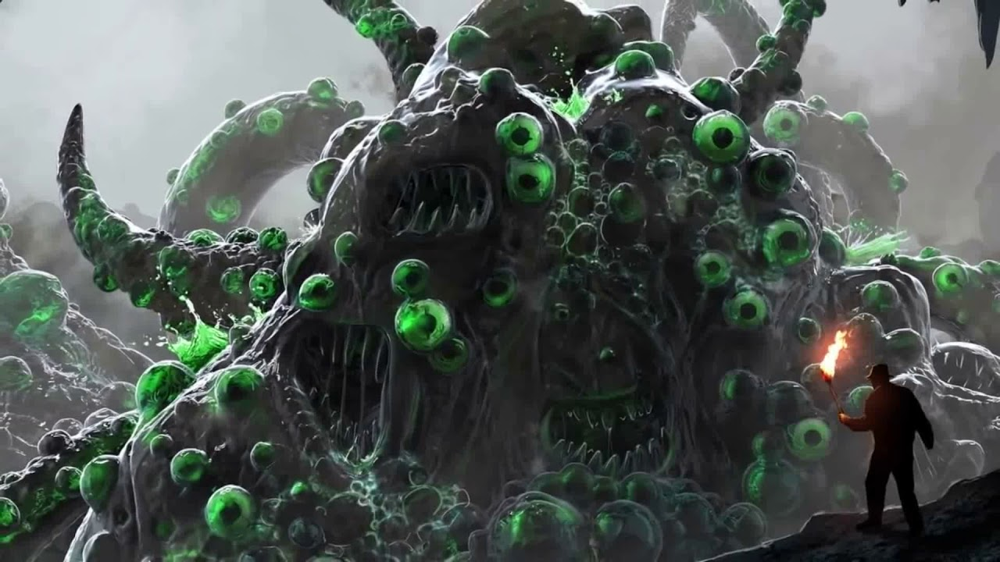

Старинные оккультные книги, такие как “Некрономикон”, “Ктаат Аквадинген”, или “Безымянные культы”, содержат столь опасные заклинания, что их если и следует произносить, то лишь приняв все предписанные для этого случая меры. Ибо если привести в этот мир создание столь могущественное, как Бугг-Шаш, это неминуемо навлечёт беду. О, горе тому, кто призовёт Душителя, не заключив его заранее в Пентаграмму Силы.
Бугг-Шаш, он же Приходящий во тьме, являет собой студенистое существо, у которого всё тело покрыто несметным множеством глаз и пастей. Глаза его видят без света и смотрят зловеще, с вожделением, а пасти постоянно раскрыты, но отвратительнее всего в них – это склизкие хлюпающие губы, что присасываются ко всякому, кому не посчастливится оказаться поблизости. И, что особенно мерзко, всюду оставляют липкий след, точно от огромного слизня. Но самая страшная способность этих губ – это смертельный поцелуй, при котором они высасывают из своей жертвы всё, что есть у неё внутри.
Собрат Йибб-Тстлла и слуга Йог-Сотота, этот Душитель способен даже поднимать мёртвых из могил, подчиняя их своей воле, однако и он не лишён слабостей. Единственное спасение от Бугг-Шаша – это свет. С его помощью можно заставить Великого Черного отступить, но только до тех пор, пока всё вокруг не померкнет вновь. Вернуть же его в своё измерение можно лишь принеся ему в жертву, и чем скорее это сделать, тем безопаснее. Иначе Бугг-Шаш наградит свои поцелуем ближайшего к себе – того, кто его призвал!
Имя Бугг-Шаша впервые упоминается в рассказе Брайана Ламли “Из бездны – с Суртсеем” (Rising With Surtsey, 1971). Затем божество становится главным антагонистом (правда, безымянным) “Демонического” Дэвида Саттона (Demoniacal, 1972), но наиболее подробно его образ раскрывается в рассказе-продолжении – “Поцелуй Бугг-Шаша” (The Kiss of Bugg-Shash, 1978) Брайана Ламли.
